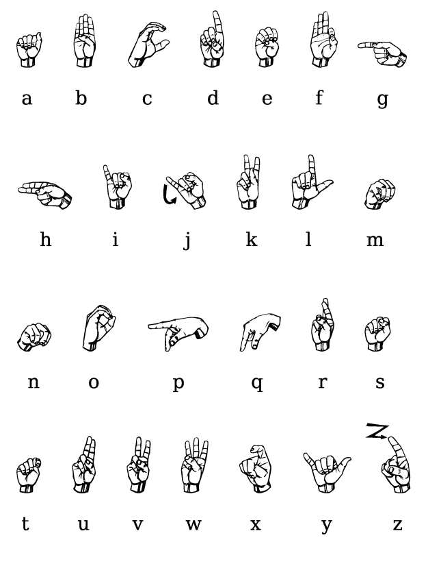
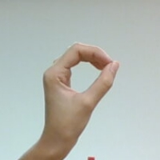
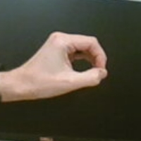
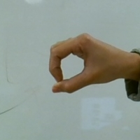
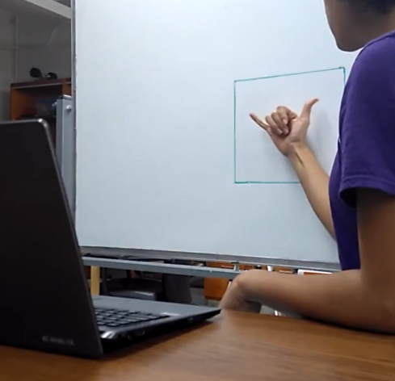

AceASL, the sign language app for kids!
Overview
This was an idea that I proposed for my winter quarter project. I really wanted to incorporate American Sign Language (ASL) into a project somehow, so I tried to think of interesting ways to do so. I was also exploring machine learning, and deep learning, so I decided to use that knowledge for the project. The main idea was to design an app for children to learn and practice ASL. Educational apps are very common and effective, so I thought this could be a good way for kids to become comfortable with ASL letter hand signs, without a parent nagging them, or correcting them repeatedly.
Early Stages
Before starting the project, I needed to decide how I was going to implement the app. I planned to use the Tensorflow libraries, but there was a lot of reading up to be done before I could implement it. I also decided to design this version of the app using my laptop's webcam as the main camera. Thus, this version was going to be controlled from a laptop. Ideally, an app for kids works best if it is optimized for a tablet, as it is easier for kids to interact with tablets, but I decided that for the first version, programming everything to work on my laptop would be simpler.
Implementation
1. The machine learning component: I decided to use the 'Tensorflow for Poets 2' library. I chose this because it was an open source library that implemented the concept of 'transfer learning' very well. Transfer learning implies that a model has already been trained on another existing dataset. In this case, it was trained on the ImageNet Large Visual Recognition Challenge dataset. The model can successfully differentiate between 1000 different image classes. The retraining was done using MobileNet, which is an efficient Convolutional Neural Network (CNN) that is used for computer vision applications. I used it for my project by retraining it with a dataset containing images of all the ASL letter hand signs.
2. The computer vision component: For the next stage, I needed to collect images from the webcam, of a person actually trying out all the ASL signs. Using OpenCV, I saved these images from the webcam and then tested them with the trained network to see which ASL letter it was. The accuracy turned out to be pretty high - around 96% for most of the letters. For consistent results, I needed to ensure that the images were taken with a plain background. Some of the images that I took while I was testing the retrained model for the letter 'O' are shown below.
  3. The graphical user interface component: I implemented an interface using Tkinter. An image of a specific letter is displayed, and then the user has the option of recording their own hand signal. Then, they can test to see if they got it right (or not!). I tried to make my interface a little colorful and kid-friendly, but there are definitely some design limitations with Tkinter in terms of font options, and styling options, so I hope to improve the UI design in a future version.
Using the App
The video below shows the basic app design. The letter and the ASL hand sign for the letter Y are displayed in a Tkinter window.
After the user clicks on 'Click here to record your sign!', there is a pause (and the button remains pressed for a while), during which the user needs to try out the ASL sign themselves. In the image below, I am trying out the ASL sign for 'Y', after clicking the first button on the Tkinter screen.
Now the user can check if their sign was correct. The video below shows the labelling of the image as the letter 'Y', and the user gets a message informing them that their sign was right.